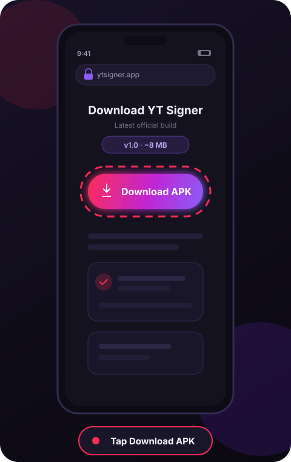
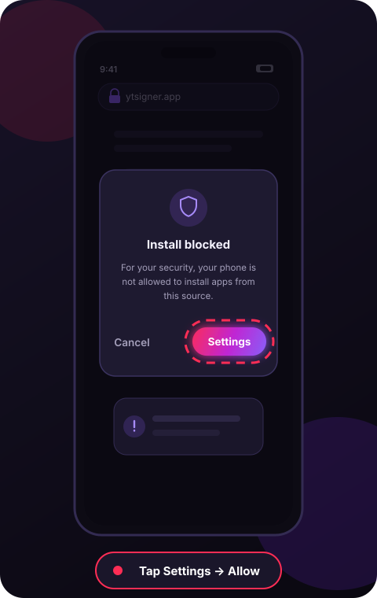
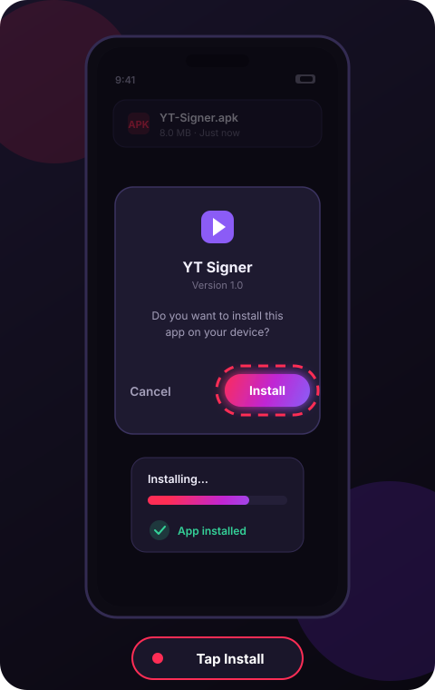
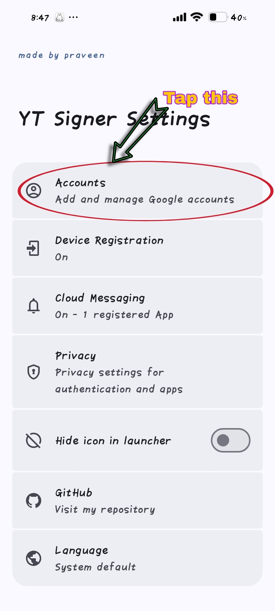
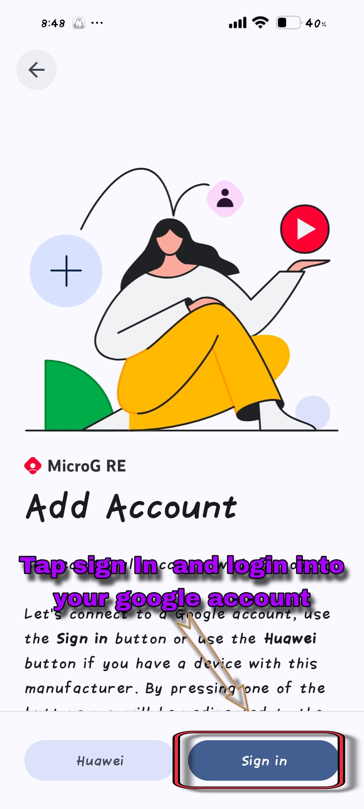
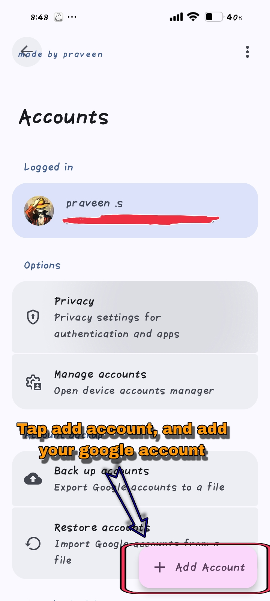
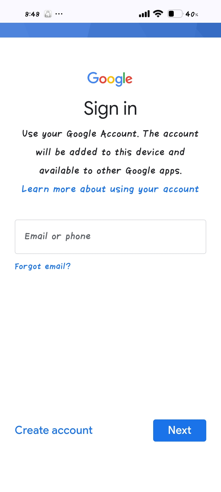

On-device sessions
Sign-ins are saved locally on your phone. Your credentials never touch our servers — because we don't have any.
Welcome to YT Signer
Sign in to YouTube. Safely. On your device.
YT Signer is a lightweight Android helper that signs into your YouTube accounts and keeps every session on your phone — never on someone else's server.
Everything you need to manage YouTube sign-ins from one small app.
Sign-ins are saved locally on your phone. Your credentials never touch our servers — because we don't have any.
Add every YouTube account you manage and switch between them without signing out and back in each time.
Roughly 8 MB, installs in seconds and runs smoothly even on older Android devices.
Every tap is shown with real app screenshots — Settings, + Add Account, Sign in. No guesswork, no configuration.
No ads, no trackers, no analytics on your accounts. What happens on your phone stays on your phone.
The Download button at the top of this page always serves the newest official build of YT Signer.
Follow these three steps to get YT Signer on your phone.
Press the red Download App button at the top of this page (or in the hero). Your browser will start downloading YT-Signer.apk right away.

Android may show “For your security, your phone is not allowed to install unknown apps from this source.” Tap Settings and switch on Allow from this source, then go back.

Open your Downloads folder (or tap the download notification), select YT-Signer.apk and tap Install. When it finishes, tap Open — you're ready to add your first account.

Four quick taps to add your Google account — shown exactly as it looks inside the app.

Go to Settings in YT Signer, then tap Accounts — add and manage Google accounts.

On the Accounts screen, press the + Add Account button at the bottom right.

The MicroG RE screen opens — tap the blue Sign in button to connect a Google account.

Type your Google email or phone, tap Next — your account is added to YT Signer.
Yes. The APK on this page is completely free to download and use, with no ads or in-app purchases.
YT Signer signs you in through Google's official sign-in page and stores the resulting session on your phone only. It does not upload your password or session to any server.
Any Android device running Android 8.0 (Oreo) or newer. iOS is not supported yet — the app is Android-only for now.
Tap the Download button at the top of this page to get the newest build, then install it over your current version — your accounts stay intact.
Open the account in the app and choose Remove. The stored session is deleted from the device immediately.
Download YT Signer, add your first account and you're set in under a minute.
Download App